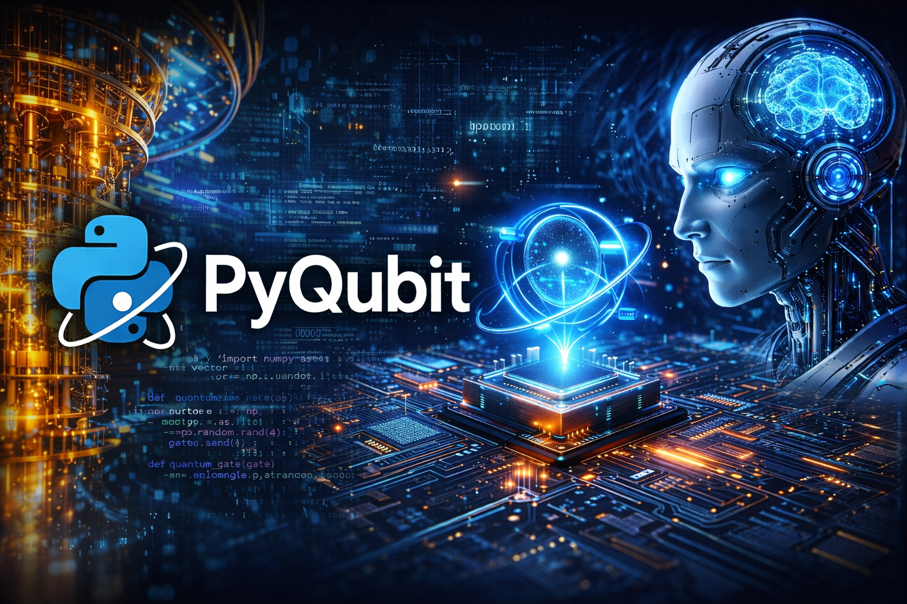
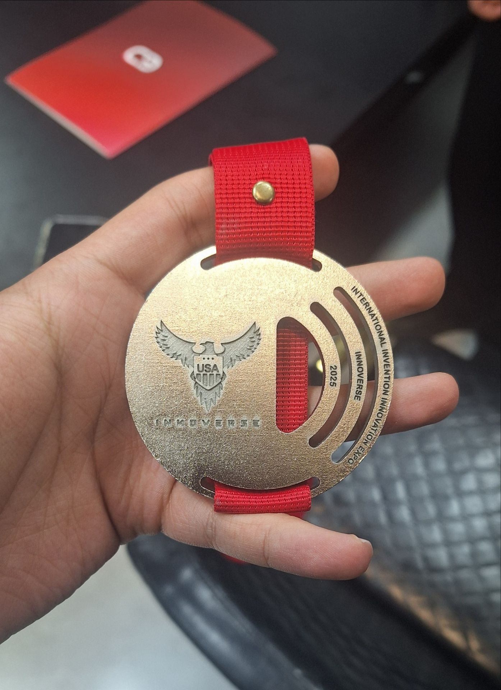
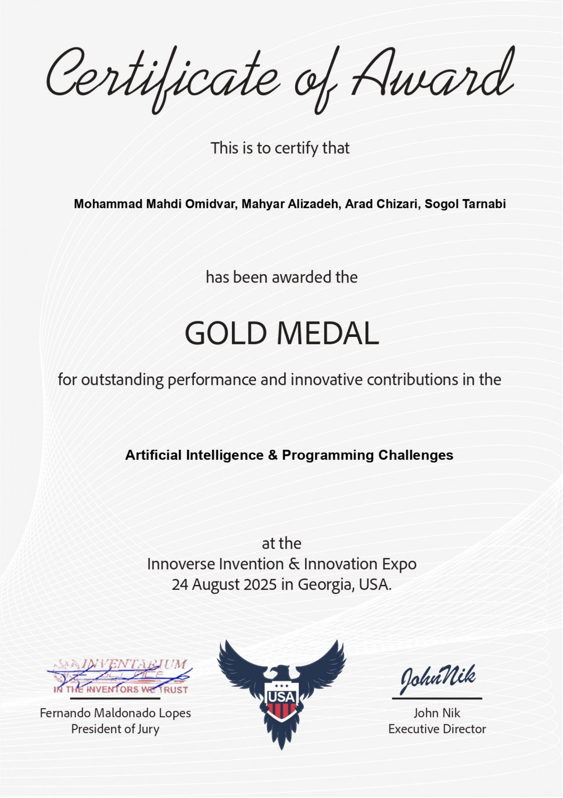
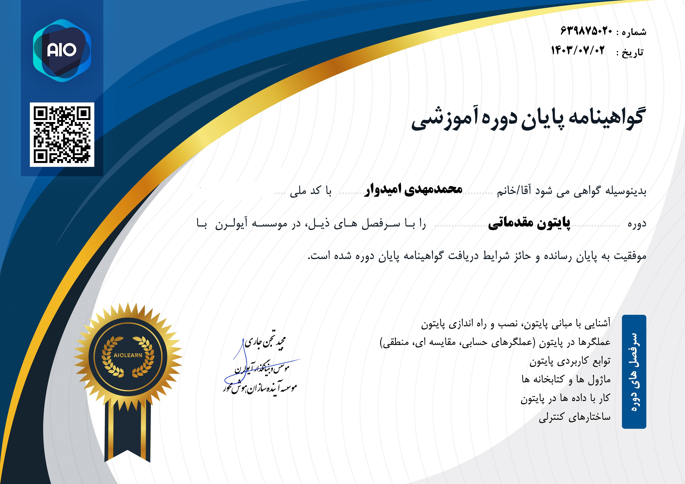
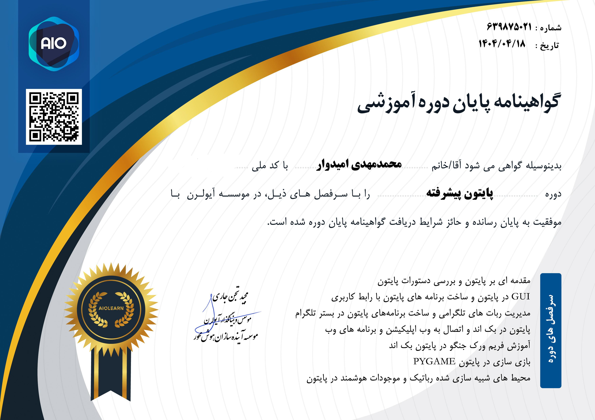
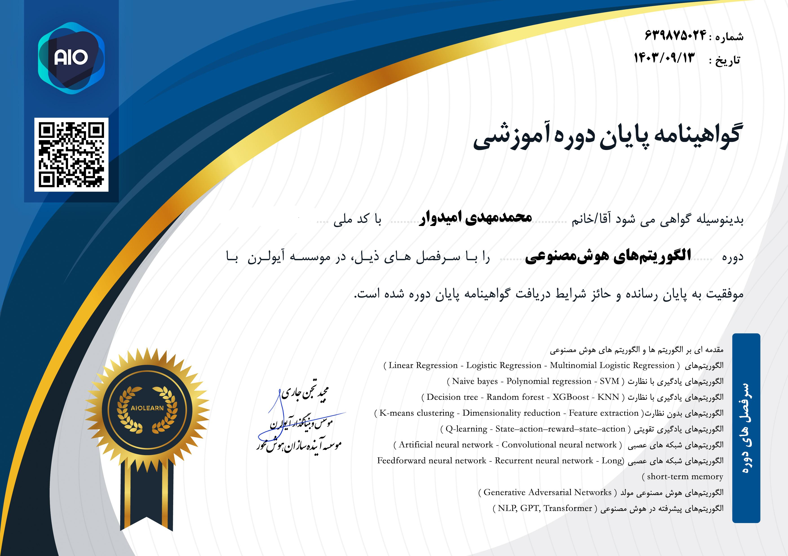
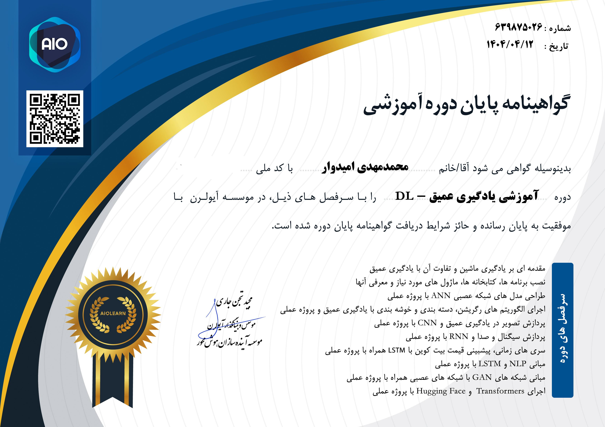
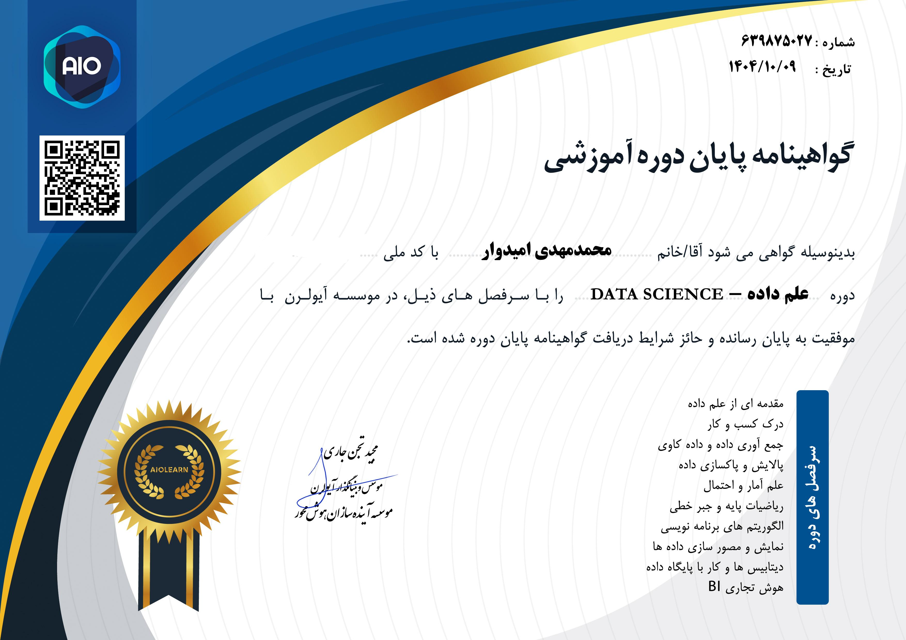

Mohammad Mahdi
Omidvar
Turning complex mathematical algorithms into highly scalable, intelligent software solutions. Empowering businesses through Data Science, AI, and robust Python backends. Gold Medalist on the global stage.

Technical Skills & Impact
+20
Commercial Projects
>5
Startup Collaborations
#1
Global Gold Medalist
AI & Machine Learning & Deep Learning
Software Engineering
Deep Dive & Expertise
AI & Back-end Develop
Integrating powerful AI models seamlessly into robust backend architectures. Utilizing frameworks like Django, Flask, and FastAPI to create highly scalable, secure, and lightning-fast APIs. This ensures complex inferences run smoothly in production, serving thousands of requests reliably.
Machine Learning & Deep Learning
Designing and optimizing complex neural networks from scratch. Proficient in classical algorithms and advanced Deep Learning architectures. Expertise in handling massive datasets using TensorFlow and PyTorch to solve predictive modeling and classification problems accurately.
Computer Vision & Audio Processing
Extracting meaningful data from visual and audio streams. Implementing state-of-the-art object detection (YOLO), facial recognition, and image segmentation. Skilled in building real-time multi-modal monitoring systems for security and automated surveillance.
Data Science & Feature Engineering
Transforming raw, chaotic data into actionable business intelligence. Expertise in meticulous data cleaning, exploratory analysis (EDA), and advanced feature engineering using Pandas and Scikit-learn to drastically improve model performance and uncover hidden trends.
Reinforcement Learning
Developing autonomous agents that learn optimal behaviors through trial and error. Applying advanced RL algorithms such as Q-Learning and PPO to solve complex control problems, simulating environments for algorithmic trading and robotics control.
NLP & Transformers
Mastering Natural Language Processing using modern Transformer architectures. Fine-tuning Large Language Models (LLMs) for specific industry tasks. Skilled in sentiment analysis, entity extraction, and building intelligent, human-like conversational agents.
Telegram Bot Development
Creating highly interactive, AI-powered Telegram bots for customer support, automated sales, and data scraping. Utilizing libraries like Aiogram to handle async operations, integrating directly with databases and AI backends to provide instant services.
Achievements
🏆 INNOVERSE 2025
Gold Medalist - AI Section
Awarded the Gold Medal for the "AI Emotion-to-Art Project". The competition was held on August 24, 2025, in Georgia, USA. This revolutionary project utilized multi-modal emotion recognition to generate real-time art.


Flagship Project
Overview
A revolutionary AI system capable of interpreting human emotions from multiple modalities (Text, Voice, and Image) and translating them into unique, symbolic artwork in real-time. This project secured the global Gold Medal.
Key Features
- Multi-modal Emotion Recognition Architecture.
- Real-time asynchronous Speech-to-Text inference.
- Generative Art synthesis using advanced diffusion models.
Professional Certificates

Basic Python
Comprehensive introduction to Python programming syntax and core logic.
Mastering loops, functions, and fundamental data structures.

Advanced Python
In-depth exploration of Object-Oriented Programming, decorators, and generators.
Focus on writing clean, scalable, and highly optimized code.

AI Algorithms
Deep dive into search strategies, heuristic optimization, and foundational AI math.
Implementation of core machine intelligence algorithms from scratch.

Deep Learning
Advanced training in neural networks, CNNs, RNNs, and Transformers.
Hands-on architectural design using TensorFlow and Keras.

Data Science
Mastering statistical modeling, data manipulation, and visual storytelling.
Extracting powerful insights from massive, unstructured datasets.
Advanced API
Designing secure, RESTful, and scalable backend communication interfaces.
Deploying high-performance API endpoints for AI models.